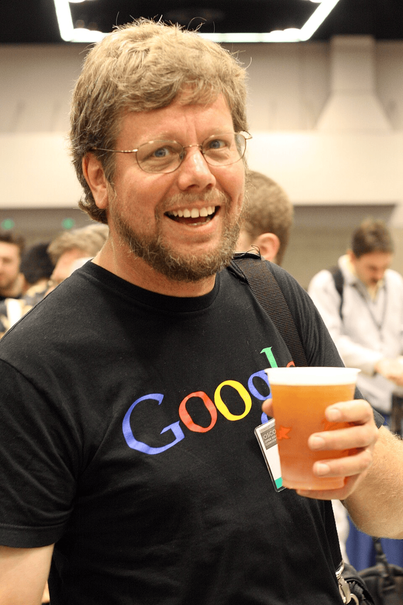

📚 Temas de la Sesión
- ¿Qué es Python?
- Instalación y configuración
- Primeros pasos con Variables
- Estructuras condicionales en Python
- Colecciones
- ¿Qué es una Lista?
- ¿Qué es una Tupla?
- ¿Qué es un Conjunto? (set)
- ¿Qué es un Diccionario?
- Bucles
- Patrones mentales de los Bucles
- Ejercicios y sus soluciones
¿Qué es Python?
Python es un lenguaje de programación de alto nivel, interpretado, de código abierto y propósito general, creado en 1991 por Guido van Rossum, diseñado para ser fácil de leer y escribir con una sintaxis limpia similar al lenguaje humano.

Guido van Rossum, creador de Python
Para muchos el lenguaje Python es conocido por su simplicidad y legibilidad, lo que lo hace ideal para principiantes, pero también es poderoso y versátil, utilizado por desarrolladores profesionales en una amplia variedad de aplicaciones. Python es un lenguaje de programación de alto nivel, interpretado, de código abierto y propósito general. Además de su sintaxis clara y legible, Python es conocido por su amplia biblioteca estándar y su gran comunidad de desarrolladores, lo que facilita la resolución de problemas y el desarrollo de proyectos complejos. Python se utiliza en diversos campos, incluyendo desarrollo web, análisis de datos, inteligencia artificial, automatización de tareas, desarrollo de software y más. Es un lenguaje popular tanto para principiantes como para profesionales debido a su versatilidad y facilidad de uso.
Python se utiliza principalmente para desarrollo web (con frameworks como Django y Flask), análisis de datos y ciencia de datos (gracias a bibliotecas como Pandas y NumPy), inteligencia artificial y aprendizaje automático (usando TensorFlow y Keras), así como para la automatización de tareas y la creación de scripts.
Las aplicaciones abarcan desde la visualización de datos y el control de robots hasta la gestión de bases de datos y el desarrollo de software en diversos sectores como marketing, salud y finanzas. Es ampliamente adoptado por empresas como Google, Netflix y NASA debido a su versatilidad, gran comunidad de soporte y capacidad para ejecutar proyectos complejos con menos líneas de código.
Historia
Ciertamente, la historia del lenguaje de programación Python se remonta hacia finales de los 80s y principios de los 90s. Su implementación comenzó en diciembre de 1989 cuando en Navidad Guido van Rossum, que trabajaba en el CWI (un centro de investigación holandés de carácter oficial), decidió empezar el proyecto como un pasatiempo dándole continuidad al lenguaje de programación ABC del que había formado parte del equipo de desarrollo en el CWI. Dicho lenguaje se enfocaba en ser fácil de usar y aprender manteniendo potencia en su desempeño, pero el hardware disponible en la época de su creación hacía difícil su uso y el proyecto no trascendió como se esperaba. Van Rossum es por tanto el autor principal de Python y continúa ejerciendo un rol central decidiendo la dirección del lenguaje. En la comunidad de Python se le conoce como Benevolente Dictador Vitalicio (en inglés: Benevolent Dictator for Life, BDFL). El nombre "Python" viene dado por la afición de Van Rossum al grupo Monty Python.
💡 Nota: Python es un lenguaje de programación interpretado, multiparadigma y de alto nivel.
En esta sesión conocimos algunos conceptos básicos y la historia del lenguaje.
Próximos pasos
Continúa practicando los ejercicios y prepara las preguntas para la siguiente clase.